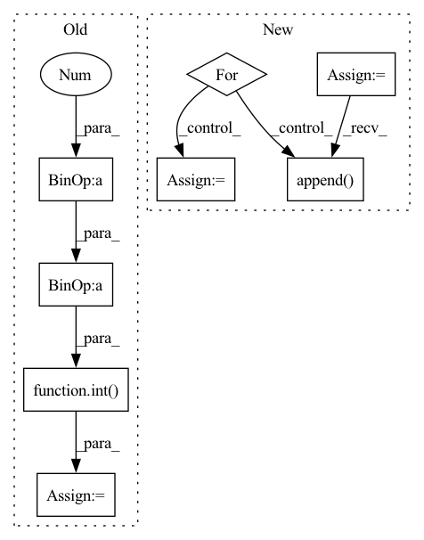

Pattern ID :8045
Before Change
df_train (pd.DataFrame): training data
df_val (pd.DataFrame): validation data
n_samples = len(df) - n_lags + 2 - (2 * n_forecasts)
n_samples = n_samples if inputs_overbleed else n_samples - n_lags
if 0.0 < valid_p < 1.0:
n_valid = max(1, int( n_samples * valid_p) )
else:
assert valid_p >= 1
assert type(valid_p) == intAfter Change
if isinstance(df, list):
df_list = df.copy()
df_train_list = list()
df_val_list = list()
if local_modeling:
for df in df_list:
df_train, df_val = single_split_df(df, n_lags, n_forecasts, valid_p, inputs_overbleed)
df_train_list.append(df_train)
df_val_list.append( df_val)
df_train, df_val = df_train_list, df_val_list
else:
threshold_time_stamp = find_time_threshold(df_list, n_lags, valid_p, inputs_overbleed)
df_train, df_val = split_considering_timestamp(df_list, threshold_time_stamp)In pattern: SUPERPATTERN
Frequency: 3
Non-data size: 8
Instances Fragment ID: 28543731
Project Name: ourownstory/neural_prophet
Commit Name: d07b79568ef37904de81ba00248764233fbaa8c8
Time: 2021-10-07
Author: ourownstory@users.noreply.github.com
File Name: neuralprophet/df_utils.py
M Class Name: AnonimousClass
N Class Name: AnonimousClass
M Method Name: split_df(6)
N Method Name: split_df(5)
M Parent Class:
N Parent Class:
M File Name: neuralprophet/df_utils.py
N File Name: neuralprophet/df_utils.py
M Start Line: 297
M End Line: 312
N Start Line: 506
N End Line: 539
Before Change
def receive_models(self):
assert (len(self.selected_clients) > 0)
active_clients = random.sample(
self.selected_clients, int( (1 - self.client_drop_rate) * self.join_clients) )
active_train_samples = 0
for client in active_clients:After Change
self.uploaded_weights = []
tot_samples = 0
self.uploaded_ids = []
self.uploaded_models = []
for client in self.selected_clients:
self.uploaded_weights.append(client.train_samples)
tot_samples += client.train_samples
self.uploaded_ids.append( client.id)
self.uploaded_models.append(client.model)
for i, w in enumerate(self.uploaded_weights):
self.uploaded_weights[i] = w / tot_samples
Fragment ID: 28543776
Project Name: tsingz0/pfl-non-iid
Commit Name: 4f394efe04f30dbd3cab4278467631854f997903
Time: 2022-01-14
Author: 2719584131@qq.com
File Name: system/flcore/servers/serverbase.py
M Class Name: Server
N Class Name: Server
M Method Name: receive_models(1)
N Method Name: receive_models(1)
M Parent Class: object
N Parent Class: object
M File Name: system/flcore/servers/serverbase.py
N File Name: system/flcore/servers/serverbase.py
M Start Line: 96
M End Line: 112
N Start Line: 91
N End Line: 101
Before Change
df_train (pd.DataFrame): training data
df_val (pd.DataFrame): validation data
n_samples = len(df) - n_lags + 2 - (2 * n_forecasts)
n_samples = n_samples if inputs_overbleed else n_samples - n_lags
if 0.0 < valid_p < 1.0:
n_valid = max(1, int( n_samples * valid_p) )
else:
assert valid_p >= 1
assert type(valid_p) == intAfter Change
if isinstance(df, list):
df_list = df.copy()
df_train_list = list()
df_val_list = list()
if local_modeling:
for df in df_list:
df_train, df_val = single_split_df(df, n_lags, n_forecasts, valid_p, inputs_overbleed)
df_train_list.append(df_train)
df_val_list.append( df_val)
df_train, df_val = df_train_list, df_val_list
else:
threshold_time_stamp = find_time_threshold(df_list, n_lags, valid_p, inputs_overbleed)
df_train, df_val = split_considering_timestamp(df_list, threshold_time_stamp) Fragment ID: 28543764
Project Name: ourownstory/neural_prophet
Commit Name: d07b79568ef37904de81ba00248764233fbaa8c8
Time: 2021-10-07
Author: ourownstory@users.noreply.github.com
File Name: neuralprophet/df_utils.py
M Class Name: AnonimousClass
N Class Name: AnonimousClass
M Method Name: split_df(6)
N Method Name: split_df(5)
M Parent Class:
N Parent Class:
M File Name: neuralprophet/df_utils.py
N File Name: neuralprophet/df_utils.py
M Start Line: 297
M End Line: 312
N Start Line: 506
N End Line: 539
Before Change
vec = torch.take(self.centroids[self.nbits], bins)
for i in range(self.num_hadamard):
vec = self.irht(vec, int( seed + (self.num_hadamard - 1 ) - i) )
return (scale * vec)[:int(dim)].cpu().numpy()
After Change
total_dim = int(metadata[1])
curr_index = 0
vec = []
for k in range(2, max(metadata.keys()) + 1, 2):
scale = metadata[k]
dim = int(metadata[k + 1])
vec.append( self.decompress_slice(bins[curr_index:curr_index + dim], scale, dim, seed))
curr_index += dim
vec = torch.cat(vec)
vec = vec[:total_dim] Fragment ID: 28543758
Project Name: intel/openfl
Commit Name: c10577cb32201c45846d920f871e4bcab76e37ed
Time: 2023-01-13
Author: 30897761+yanivbi@users.noreply.github.com
File Name: openfl/pipelines/eden_pipeline.py
M Class Name: Eden
N Class Name: Eden
M Method Name: decompress(3)
N Method Name: decompress(5)
M Parent Class:
N Parent Class:
M File Name: openfl/pipelines/eden_pipeline.py
N File Name: openfl/pipelines/eden_pipeline.py
M Start Line: 252
M End Line: 260
N Start Line: 337
N End Line: 354